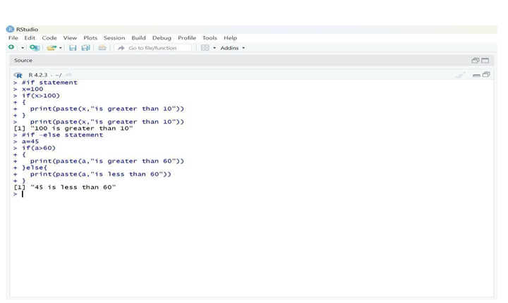

To implement the control statements in R.
o Define Conditional Statements – Use if and if-else statements to check conditions based on given
values.
o Apply Logical Conditions – Compare values using relational operators (e.g., >, <, >=, <=).
o xecute the Program – Run the R script in an R environment like RStudio to evaluate the
conditions.
o Verify Output – Observe the printed results to ensure the correct execution of conditional
statements.
#if statement
x=100
if(x>100)
{
print(paste (x,"is greater than 10"))
}
#if –else statement
a=45
if(a>60)
{
print(paste(a,"is greater than 60"))
}else{
print(paste(a,"is less than 60"))
}
